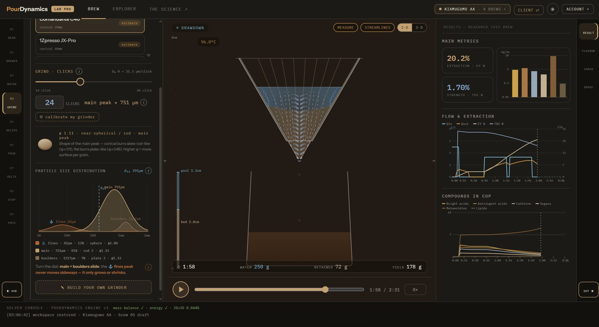
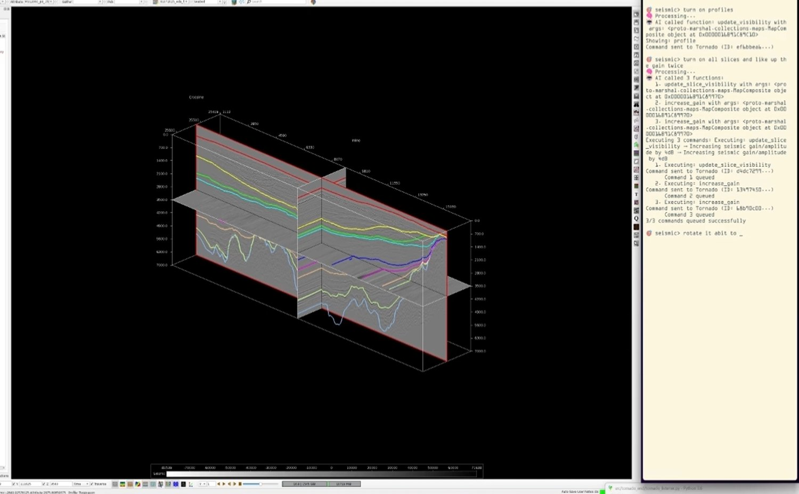
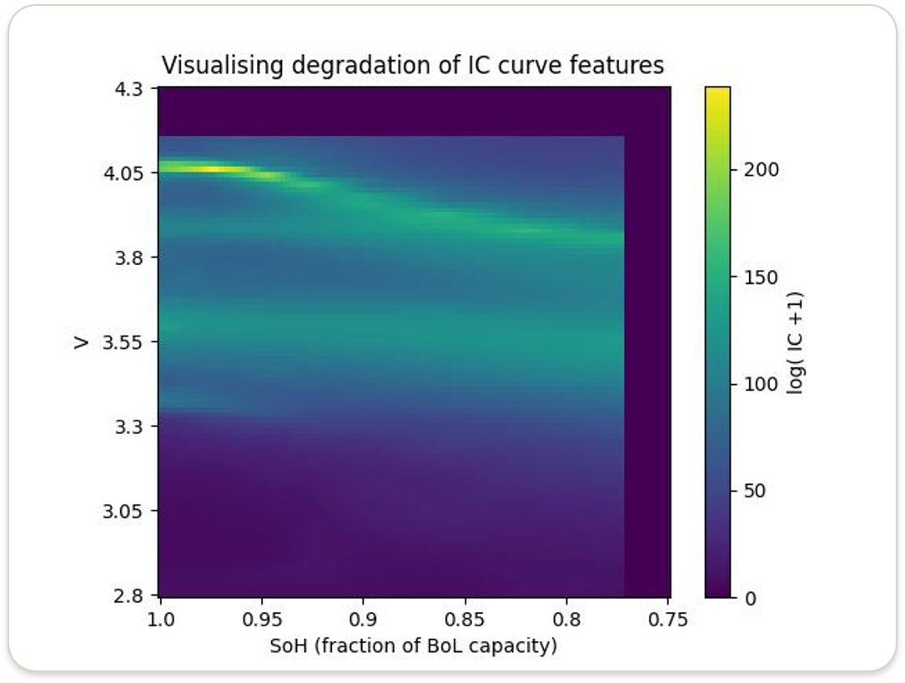
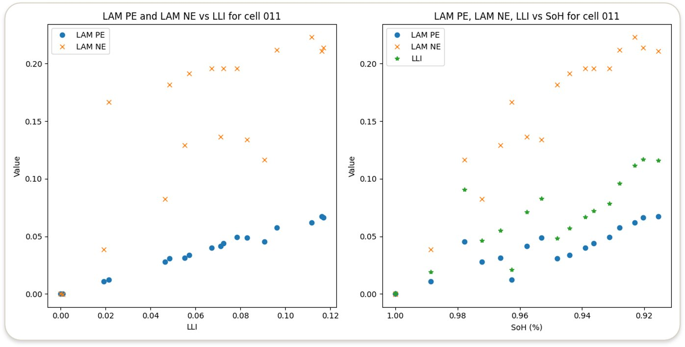
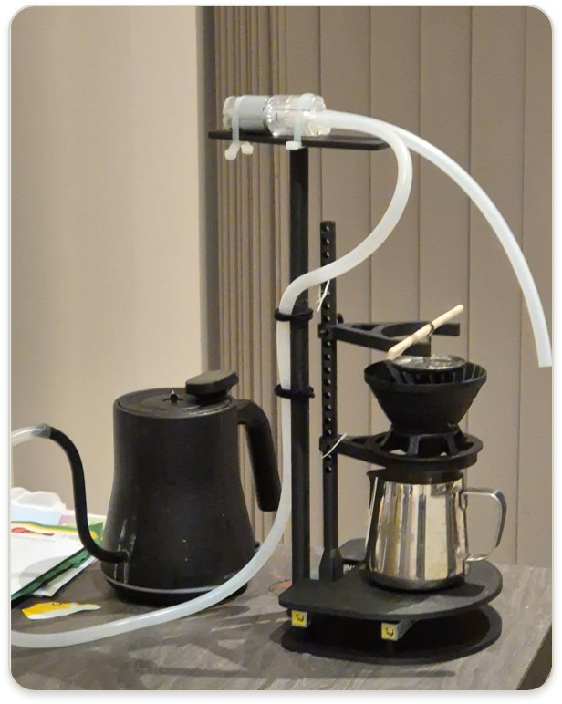
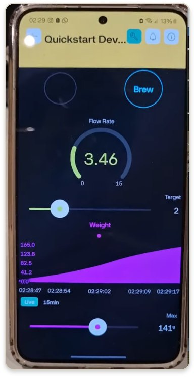
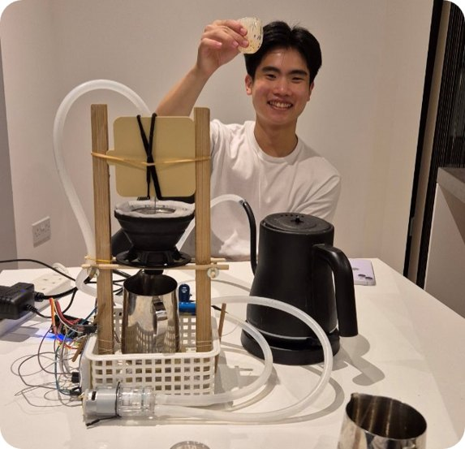
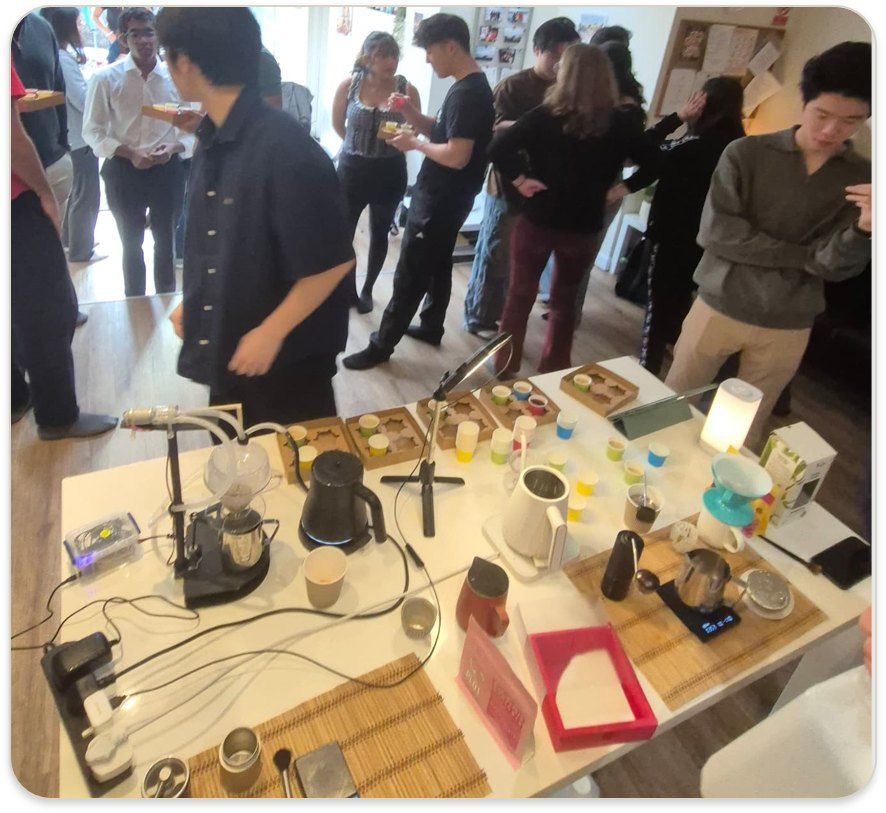

I am highly agentic, and so are the systems I build. Physics trained me to search breadth-first for the shape of a problem, then depth-first once I know where the north star sits.
That is usually how I work: understand the system quickly, wedge deep to isolate the few parameters that actually matter, and execute without losing sight of the bigger picture. I bring the same intensity to people, with an infectious energy that gets good people aligned to the same vision. So far, that approach has taken shape in the projects below. Feel free to interact with them.
1Catalon Inc
An agentic operating system for the chemical industry.
Cofounder and CTO, exited. Incubated at Entrepreneur First. $100K ARR. San Francisco, 2026.
The long-term product is the whole operating layer for a distributor. Order intake is the beachhead. Inbound purchase orders arrive as free text: wrong units, chemical synonyms, trade names that never match the catalogue, quantities in gallons against a price book kept in pounds. Inside sales retypes all of it into the ERP by hand. Catalon reads the mail and drafts the order in about three seconds at 99.9% field accuracy, with a human making the final one-click approval. Reps get back roughly half their day, and spend it selling instead of retyping.
Mail is triaged before any model runs, so cost tracks orders rather than inbox volume. Each line is reconciled against the customer catalogue and price book and emitted as a validated ERP draft. Failures land in a queue a human can see. Each account keeps its pricing and packaging quirks in a readable cartridge outside the engine, so onboarding a new distributor is a tuning problem rather than a build, under two weeks. Nothing is trained.
Demonstration 1. Order intake.
inbox1 / 3
Subj: PO 4471 restock
ship to our Houston dock:
2 drums acetone, technical 99.5%
500 gal isopropanol (usual grade)
need by Friday, Net 30.
Multiscale extraction engine. Open source, 2024 to 2026.
The engine works at two scales at once. Darcy flow sets how water moves through the packed bed and how long it dwells at each depth; inside every grain, solubles diffuse out of a porous solid into that moving water. The intra-particle problem is the same boundary value problem as lithium diffusing out of a cathode particle, so the solver came across from the battery work intact, and a sensory layer maps dissolved concentration to what you taste. Validated against the analytical sphere solution to under 0.2%.
What matters is the derivative rather than the prediction itself. Differentiate the cup with respect to every brewing variable and most of the columns collapse: grind size and flow rate carry nearly all of the sensitivity, and most of what gets traded as technique sits well below them.
Demonstration 2. Two variables, one cup.
finecoarse
slowfast
TDS 1.28%Yield 19.8%
bitter / flow-0.057 per g/s
acidity / grind+0.049 per 100 µm
body / grind-0.084 per 100 µm
Balanced. Sweet through the middle, acidity present but not sharp.

Figure 1. The full engine: particle size distribution, bed drawdown, measured extraction yield.
A voice agent that drives Tornado, professional 3D seismic interpretation software.
Viridien, 2025. Built solo, my own initiative.
A geologist says “take me to the fault at inline 2410, turn the velocity on, bookmark it” and the 3D volume moves. Nobody opens a menu or writes a script. SeisPilot listens, plans a queue of operations against the application's own API, runs them on the live scene and answers back in speech.
It behaves as an agent rather than a phrasebook of commands. It holds the session state, resolves references like “that fault” or “go back two steps” through a twenty-deep undo history, chains several steps out of one sentence, and asks when a request is ambiguous. Every call it proposes is checked against a whitelist before it reaches the software, so nothing destructive can run. A coordinate transform keeps the agent and the geologist talking about the same point in the earth.
Tornado is powerful software that takes months to learn properly, and the people who can drive it fluently are in short supply. SeisPilot puts that fluency within reach of any geologist who can describe what they want. It launched internally at Viridien and was taken up by teams in its offices worldwide.
Demonstration 3. Speak to the 3D volume.
say one of these
×1.0
·awaiting an instruction
The sentence is planned into calls, validated, then run against the live volume. “delete the survey” is not on the whitelist, so the validator refuses it and writes it to the audit log.

Figure 2. SeisPilot driving an interpreted 3D volume inside Tornado at Viridien.
Finding a CRISPR guide that hits one pathogen and spares the commensals around it is a nearest neighbour problem in Hamming space over millions of protospacer sites. Sequence aligners are built for homology search, not for exhaustive small-mismatch neighbourhoods, so running the question honestly with BLAST is too slow to sit inside a design loop.
The speed comes from the representation and the search structure. Guides are packed two bits per base, so a mismatch count becomes an XOR and a popcount over machine words instead of a character comparison. Then, because Hamming distance is a true metric, the triangle inequality prunes: a BK-tree over the packed database lets whole subtrees be discarded once they cannot possibly fall inside the tolerance, which takes the database term from linear to logarithmic. A trie over exact prefixes runs in front of that and throws out most candidates before any distance is computed at all.
About three seconds per guide against 2.3 million sites, roughly 2000× faster than BLAST for the same answer. That is fast enough to check every candidate in a design run instead of assuming the promising ones are clean.
Demonstration 4. Guide search.
strictpermissive
shortlong
candidates screened
2,300,000
survive prefix filter
197
on target, pathogen
31
off target, commensals
15
closest off-target, 2 mismatches
GACCTTGCAAGCGCCGAGAA
Too permissive. This guide would cut the microbiome as well as the target.
Imperial College London, 2024 to 2025. Paper pending with Dr Derek Siu.
Cell health is normally read by taking the cell apart. As an inverse problem it need not be: a full cell curve is the difference of two half cell curves, so if you can recover how each electrode's curve has been stretched and slid, you know how much active material each one lost and how much lithium inventory went with it. The smaller electrode then sets the state of health.
The features in dQ/dV and dV/dQ are staging phase transitions in the graphite and in the layered oxide. They behave like a boiling point: the transition happens at a fixed composition, but move the surrounding conditions and the point at which you meet it moves too. Lose lithium inventory or active material and the same transition appears at a different place in capacity space, smoothly and non-uniformly, while its underlying thermodynamics stay put. The diagnostic information therefore sits in where the features are relative to each other rather than in how tall they are. A pointwise least squares residual reads that badly, and on NMC811 with graphite it lands the optimiser in a local minimum that returns a plausible wrong answer.
I score the fit with dynamic time warping instead, which lets the capacity axis stretch and shift the way a real phase shift does and charges the cost for misaligned features rather than for a curve being a few millivolts off everywhere. The resulting cost surface is still non-convex, so the parameter search runs globally, using differential evolution over the electrode loss and lithium inventory terms with a local refinement at the end. What comes out is per-electrode degradation from a charge curve alone, without opening the cell.
Demonstration 5. Degrade a cell, read the curve.
State of health 75%
Dashed, fresh cell. Solid, degraded. Peak positions carry the modes; heights do not.
Anode loss dominates. The graphite staging peaks compress first.

Figure 3. Features migrating down in voltage as capacity fades.

Figure 4. Recovered loss of active material at both electrodes against lithium inventory loss.
6Microscopy vision suite
Four production inspection tools, written from scratch, first time I had touched computer vision.
Aurox, 2023. Solo, about two weeks each.
Aurox builds confocal microscopy hardware, and four steps of the build and QC process were being done by eye. There was no vision code for me to extend when I arrived, and I had never worked on computer vision before. I learned OpenCV, classical Fourier optics and enough deep learning to ship, then wrote four standalone applications that now run on the production floor. Mirror flatness interferometry, final product testing, calibration target alignment and triplet lens alignment.
The flatness tool is the one I like most. A mirror under interferometric illumination gives a fringe pattern; the surface height is encoded in the phase of that pattern, not its brightness. So the frame goes to a 2D FFT, the first harmonic carrying the surface information is isolated and windowed away from the carrier and its conjugate, and the inverse transform gives a wrapped phase field which is then unwrapped into an absolute height map and fitted for tilt and piston. It runs at camera rate, so the operator watches the surface deform while holding the part.
The other three lean on convolutional networks and classical CV together: segmentation and defect classification for final product testing, sub-pixel feature localisation for calibration target alignment, and a live alignment loop for triplet lenses that reads the optical response and tells the operator which way to move. All four are real-time video pipelines talking to live hardware, which made latency, dropped frames and lighting drift mine to handle.
Modelling immersion against percolation showed only two variables really matter: flow rate and grind size. Grind is set at the burr; flow was not controllable, so that became the build. Output flow is measured as the differential of two scales, feeding a PID loop on an ESP8266 that controls the input. v1 proved the concept; v2 added a case and an IoT app, and was showcased to 150 people.


Figure 6. v2 and its app.


Figure 7. v1 under test, and the showcase.
8SEGYScribe
Viridien, 2025. About two weeks.
Seismic files arrive in whatever dialect the vendor felt like, and locating the trace headers costs a geophysicist an afternoon per file. SEGYScribe reads the free-text header, proposes byte-location hypotheses, then tests each against the trace data until the numbers are physically consistent. Above 90% accuracy across an 80-plus attribute ontology, roughly 4,000 lines across 13 modules.
YouTube A/B tests titles constantly, but each viewer is pinned to one variant, so from a single account the experiment cannot be seen. Rather than scrape fragile HTML, the tracker calls YouTube's internal InnerTube API and rotates a fresh visitor identity per request, so every sample looks like a different viewer. It watches 18-plus channels via RSS, samples new uploads immediately and re-samples hourly, then posts a timestamped variant history once a title stabilises.
Every assistant I use runs off the same memory and the same tools.
Personal productivity infrastructure, 2026. MCP.
Every assistant wants to hold your context itself, so I was setting the same thing up repeatedly and ending up with several assistants that each knew a quarter of my life. Alistair keeps the context on my side instead. My memory, notes, calendar, mail, messages, repositories and in-tray sit behind one FastAPI bridge exposed as MCP, and the model provider is whatever happens to be pointed at it.
Moving from one provider to another now takes a URL. I do not re-integrate the tools or re-teach the history, and a new client reads the memory the last one was writing. Skills load at runtime from a manifest instead of being baked into a client, and the real-time voice front end streams replies while heavier agentic work carries on behind it.
Figure 8. Whichever client I talk to, it reads and writes the same memory and reaches the same tools.
The slides go further than this page does. They have the derivations behind the models, screenshots and video of the tools running, and the projects I left out here.